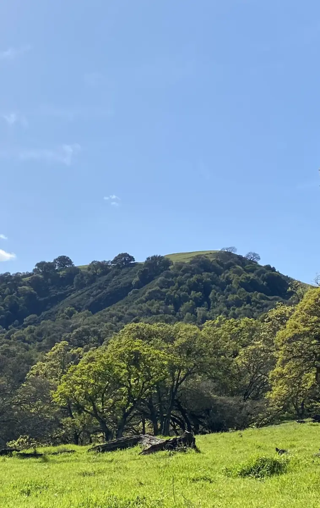

Las Trampas LAF-016
Community Wildfire Action Plan
2027–2029. This page is Action Plan Year 1, in the neighborhood’s own words. Years 2 and 3 are not listed here.
- Community name: Las Trampas LAF-016
- Plan period: 2027–2029
- Action Plan Year 1

Participation target
From 24 households to at least 34 (17%) by year end 2027.
Education and outreach goal 3: expand neighborhood participation in the Firewise program from the current 24 households to at least 34 households (17%) by year end 2027.
Action Plan Year 1
Education and Outreach
- Issue quarterly informational emails regarding seasonal fire risks and relevant updates of fire protection recommendations and regulations.
- Conduct a resident outreach to survey interest and to recruit additional households.
- Expand neighborhood participation in Firewise program from the current 24 households to at least 34 households (17%) by year end 2027.
- Circulate Lafayette City Wildfire Guide.
- Circulate updated list of preferred local fire protection vendors for home hardening and fuel reduction.
- Share examples of residents completing fire protection effort.
- Organize a neighborhood meeting with Lafayette Police Department representative to discuss emergency evacuation.
Action Plan Year 1
Home Hardening
- Encourage residents to address roof hardening with the following actions:
- Install 1/8 inch metal mesh screening to roof vents and eaves.
- Replace and repair any loose or missing shingles or roof tiles to prevent ember penetration.
- Install gutter covers.
- Check chimneys for proper spark, ember protection and apply proper screening as necessary.
- Screen or box-in areas below patios and decks with fine gauge mesh to prevent debris and combustible materials from accumulating.
- Share examples of home hardening completed in neighborhood and recommended home hardening vendors.
Action Plan Year 1
Defensible Space / Fuel Reduction
- Removal of dead trees and brush.
- Removal of highly flammable plants and trees (i.e. Eucalyptus).
- Work on creating and maintaining 0-5ft noncombustible and ember resistant zone around structures.
- Replace wood mulch products with non-combustible alternatives.
- Remove anything stored underneath decks and porches.
Action Plan Year 1
Evacuation Planning and Wildfire Preparedness
- Encourage residents to sign up for the Contra Costa County Community Warning System at www.cwsalerts.com.
- Schedule a neighborhood meeting (either via Zoom or in person) with the Lafayette City Police Department to discuss emergency evacuation.
- Participate in any City/County/Fire Districts evacuation drills.
Year 1 of the neighborhood’s Firewise USA three-year action plan (California State Required 3-Year Action Plan) for 2027–2029.